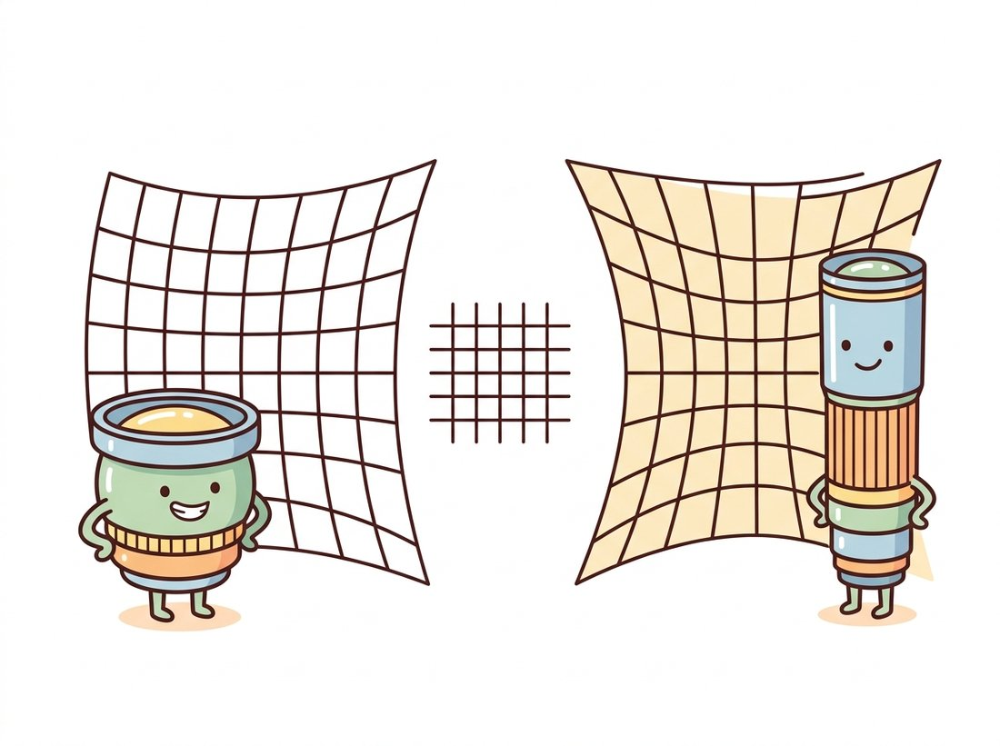

"Of course the building is bowed. I show you more world than a pinhole ever could, and bending it is how I fit it all in. Straight lines are a luxury of the narrow-minded."
A Wide-Angle Lens Defending Its Worldview
Real lenses bend the pinhole model's straight rays, but they bend them in a smooth, symmetric, repeatable way, so a low-order polynomial can describe the bending and a precomputed remap can undo it. Distortion is the gap between the camera you have and the camera the math of Section 12.1 assumes. This section models that gap with the Brown-Conrady radial and tangential terms, corrects it with OpenCV's undistortion machinery, and marks the boundary (around 120 degrees of field of view) beyond which you must switch to a fisheye model. After undistortion, every pinhole formula in this chapter becomes true again, which is the entire point.
The pinhole of the previous section was an idealization in one important respect: it had no glass. A practical camera needs a lens to gather light, and a lens, being a physical stack of curved elements, does not implement perspective projection exactly. The deviation is called lens distortion, and unlike sensor noise it is systematic: the same pixel is displaced by the same amount in every frame. Systematic errors are the good kind, because they can be measured once and corrected forever. This section is about the model that captures them and the correction that removes them; the measuring itself happens in Section 12.3, where the distortion coefficients are estimated jointly with $K$.
1. Why Real Lenses Bend Straight Lines Basic
A pinhole projects every straight line in the world to a straight line in the image (project two points of the line; the ray plane through the center intersects the image plane in a line). This straightness is the signature property of perspective projection and the easiest thing for a lens to break. As rays pass through curved glass far from the optical axis, their magnification drifts relative to rays near the axis, and image points slide radially inward or outward from where the pinhole model says they belong. Two classic patterns result, and Figure 12.2.1 shows both next to the ideal:
- Barrel distortion: magnification decreases away from the center, so the image of a square bulges outward like a barrel. Typical of wide-angle and zoom lenses at the short end, action cameras, and webcams.
- Pincushion distortion: magnification increases away from the center, pinching the square's sides inward. Typical of telephoto lenses.

The same two patterns wear friendlier faces in the illustration above, where each lens is drawn as a character pleased with its own distorted worldview.
Both patterns share a crucial symmetry: the displacement of a point depends (to first order) only on its distance from the principal point, not on its direction. That radial symmetry is what makes distortion cheap to model. A second, much smaller effect, tangential distortion, appears when the lens elements are slightly tilted relative to the sensor, displacing points perpendicular to the radius; it is usually an order of magnitude weaker but costs only two extra coefficients, so the standard model carries it along.
2. The Brown-Conrady Model Intermediate
Distortion is modeled in normalized image coordinates: the pixel is first stripped of the intrinsics, $x = (u - c_x)/f_x$, $y = (v - c_y)/f_y$, placing it on the virtual plane at focal distance 1. In these units, with $r^2 = x^2 + y^2$ (the squared distance from the center, so the polynomial depends only on radius), the model runs in the direction physics does: it takes the ideal pinhole position $(x, y)$ and predicts where the lens actually puts it, the distorted position $(x_d, y_d)$:
$$x_d = x\,(1 + k_1 r^2 + k_2 r^4 + k_3 r^6) + 2 p_1 x y + p_2 (r^2 + 2x^2),$$ $$y_d = y\,(1 + k_1 r^2 + k_2 r^4 + k_3 r^6) + p_1 (r^2 + 2y^2) + 2 p_2 x y.$$
The $k$ terms are the radial polynomial (even powers only, by the radial symmetry argument above), and the $p$ terms are tangential. OpenCV stores them in the order $(k_1, k_2, p_1, p_2, k_3)$, the five-element dist vector that rides alongside $K$ through the whole library. Negative $k_1$ produces barrel distortion, positive $k_1$ pincushion, and for most lenses $k_1$ alone explains the bulk of the effect, with $k_2$ trimming the residual at the corners. The model dates to Brown's photogrammetry work in the 1960s and has outlived every camera it was developed on.
The code below implements the radial part from scratch and pushes a grid of pixel positions through it, so you can see the magnitude and the geometry of the effect with real numbers rather than exaggerated cartoons. The displacement is essentially zero at the center and grows to 183 pixels at the corner, which matches the visual intuition of Figure 12.2.1: distortion is a corner phenomenon.
# Implement the radial part of Brown-Conrady from scratch: push a pixel grid
# into normalized coordinates, apply the (1 + k1*r^2) factor, map back to
# pixels, and measure how far each pixel moved. Distortion is a corner effect.
import numpy as np
k1 = -0.30 # negative k1: barrel distortion
fx = fy = 1480.0
cx, cy = 960.0, 540.0
# A 13 x 9 grid of ideal pixel positions covering a 1920x1080 frame.
u, v = np.meshgrid(np.linspace(0, 1919, 13), np.linspace(0, 1079, 9))
x = (u - cx) / fx # to normalized coordinates: distortion lives here
y = (v - cy) / fy
r2 = x**2 + y**2
factor = 1 + k1 * r2 # radial polynomial, k1 term only
ud = fx * (x * factor) + cx # back to pixels
vd = fy * (y * factor) + cy
shift = np.hypot(ud - u, vd - v)
print(f"shift at image center: {shift[4, 6]:6.2f} px")
print(f"shift at frame corner: {shift[0, 0]:6.2f} px")
# shift at image center: 0.00 px
# shift at frame corner: 183.01 pxfactor = 1 + k1 * r2 term leaves the center untouched (0.00 px shift) while dragging the corner pixel 183 pixels toward the center: distortion budget is spent almost entirely at the periphery.The Brown-Conrady equations map ideal positions to distorted ones, the direction physics runs. Correction needs the inverse, and the polynomial has no closed-form inverse, so libraries invert it numerically (a few fixed-point iterations per pixel). The expensive inversion is done once, baked into a pair of lookup maps, and then every frame is corrected with the same cv2.remap machinery you met for warping in Chapter 5. Undistortion at video rate costs no more than any other warp: one map lookup and one bilinear interpolation per pixel.
A negative $k_1$ is, to a calibration engineer, a defect to be measured and removed. To a generation raised on action cameras, the same bulging barrel look is the aesthetic of adventure, the visual shorthand for "this happened to me, on a mountain". Photo apps now ship filters that add barrel distortion to flat phone footage to fake the vibe. The Brown-Conrady polynomial runs forward and backward all day: vision pipelines invert it to recover the world, and Instagram applies it to throw the world away again.
3. Undistortion in Practice Intermediate
Given $K$ and the distortion vector from calibration, OpenCV offers a one-call correction (cv2.undistort) and a two-step version that separates map construction from application. Use the two-step form for video: build the maps once, remap every frame. One genuine decision hides in the process: undistorting bends the image border, so the corrected image has curved edges that no longer fill a rectangle. The alpha parameter of cv2.getOptimalNewCameraMatrix picks your poison. With alpha=0 the result is cropped and rescaled so only valid pixels remain (you silently lose field of view at the corners); with alpha=1 every original pixel survives but the frame gains black crescents at the borders. The code below takes the middle road explicitly.
# Two-step undistortion for video: build the inverse-distortion lookup maps
# once with initUndistortRectifyMap, then correct every frame with a cheap
# remap. getOptimalNewCameraMatrix's alpha picks the crop-vs-black-border trade.
import cv2
import numpy as np
K = np.array([[1538.4, 0., 967.3],
[0., 1537.9, 549.9],
[0., 0., 1.]])
dist = np.array([-0.34, 0.15, 0.001, -0.0006, -0.04]) # (k1, k2, p1, p2, k3)
img = cv2.imread("hallway.jpg") # 1920 x 1080 frame from this camera
h, w = img.shape[:2]
# alpha=0: keep only valid pixels (lose FOV). alpha=1: keep all pixels (black fringes).
newK, roi = cv2.getOptimalNewCameraMatrix(K, dist, (w, h), alpha=0)
# Build the inverse-distortion lookup maps ONCE...
map1, map2 = cv2.initUndistortRectifyMap(K, dist, None, newK, (w, h), cv2.CV_16SC2)
# ...then correcting each frame is a single remap (video-rate cheap).
undist = cv2.remap(img, map1, map2, interpolation=cv2.INTER_LINEAR)
x, y, rw, rh = roi # valid-pixel rectangle reported by alpha
undist = undist[y:y + rh, x:x + rw]
print("undistorted valid region:", (rw, rh), "of", (w, h))
# undistorted valid region: (1837, 1027) of (1920, 1080)initUndistortRectifyMap numerically inverts the Brown-Conrady model into two lookup maps, and remap applies them per frame. With alpha=0 the valid region shrinks to 1837 by 1027, so the camera loses about 4% of its frame to the correction, the price of straight lines.Because undistortion "fixes" the image, learners treat it as a lossless upgrade to run on everything. It is neither lossless nor always helpful. Remapping resamples every pixel through bilinear interpolation, which slightly softens the image and invents intermediate values; it also forces the FOV-versus-black-border choice of the alpha parameter, so you either discard real field of view or pad with empty pixels. Worse, it is wasted work when you only need a handful of points: feed distorted feature or marker coordinates straight into cv2.undistortPoints (and the solvers of Section 12.4), which corrects just those coordinates with no resampling at all. Undistort a full frame only when a later stage genuinely needs a rectified image (line detection, stereo, display); never undistort an image and then re-extract points you could have undistorted directly, since that pays the interpolation blur for nothing.
After this correction, straight scene lines are straight in the image again, and the pure pinhole model of Section 12.1 applies to the corrected frame with the new matrix newK. This is the standard contract throughout vision pipelines: undistort early, then let every downstream stage (the line detectors of Chapter 9, the stereo matcher of Chapter 13) assume a distortion-free camera. Alternatively, when you only care about a sparse set of points (feature matches, marker corners) rather than whole images, cv2.undistortPoints corrects just those coordinates and skips the per-pixel remap entirely, which is both faster and interpolation-free.
The remap machinery above is all you need for a small, satisfying interactive tool: load one wide-angle photo, expose $k_1$ (and optionally $k_2$) on cv2.createTrackbar sliders, and rebuild the undistortion maps on every change so the corrected frame updates as you drag. Watching straight building edges snap from bowed to ruler-straight as $k_1$ crosses its true value makes the Brown-Conrady model tangible in a way no equation does, and it doubles as a quick manual sanity check on a calibration's $k_1$. A beginner-friendly build of about 30 lines and 20 minutes, and a tidy demo to drop in a portfolio README.
Inverting the distortion polynomial yourself means writing a fixed-point or Newton iteration over normalized coordinates, roughly 25 careful lines, plus the bug where it diverges at the corners of wide lenses. OpenCV ships the inversion:
# Undistort just a sparse set of points instead of a whole frame: the library
# runs the iterative polynomial inversion per point. P=K reprojects the result
# back to pixel coordinates rather than returning normalized rays.
pts = np.array([[[12.0, 8.0]], [[1900.0, 1068.0]]]) # distorted pixel coords
ideal = cv2.undistortPoints(pts, K, dist, P=K) # P=K: return pixels, not normals
print(ideal.reshape(-1, 2))
# [[ -41.99 -25.96]
# [1962.5 1110.9 ]]cv2.undistortPoints, the interpolation-free alternative to a full-frame remap. The corner pixel (12, 8) straightens to (-42.0, -26.0), outside the original frame, which is exactly why the alpha crop of Code Fragment 2 exists.That is a 25-to-1 line reduction, and the library handles the iterative inversion (5 fixed-point iterations by default, with a termination criterion you can override), the tangential terms, and the optional reprojection through any new camera matrix P. It is also the correct way to feed distorted feature coordinates into the geometric solvers of Section 12.4 and Chapter 13 without paying for a full-frame remap.
4. When the Polynomial Is Not Enough: Fisheye & Wide FOV Advanced
The Brown-Conrady model assumes distortion is a perturbation of perspective projection. Past roughly 120 degrees of field of view that assumption collapses: a perspective image of a 180 degree scene would need an infinitely wide sensor, so wide lenses do not even attempt perspective. A fisheye lens implements a different projection altogether, commonly the equidistant mapping $r = f\theta$, where $\theta$ is the angle of the incoming ray from the optical axis: image radius grows linearly with ray angle rather than with $\tan\theta$. Fitting a perspective-plus-polynomial model to such a lens fails in a characteristic way: calibration converges, the residual looks tolerable in the center, and everything beyond 70% of the image radius is garbage.
OpenCV ships a separate four-coefficient model in the cv2.fisheye namespace for exactly this regime, with parallel versions of calibration, projection, and undistortion. The API mirrors the standard one closely enough that switching is mostly a renaming exercise, with one trap: the fisheye functions are stricter about input shapes (points must be (N, 1, 2) or (1, N, 2), float32 or float64).
# Rectify a 180-degree fisheye frame to perspective using the cv2.fisheye
# namespace, which models r = f*theta rather than perturbed perspective.
# balance plays the role of alpha: 0 crops to valid pixels, 1 keeps the circle.
import cv2
import numpy as np
# Fisheye intrinsics + 4 distortion coefficients from cv2.fisheye.calibrate.
K_f = np.array([[612.8, 0., 968.1],
[0., 612.4, 542.7],
[0., 0., 1.]])
D = np.array([[0.081], [0.012], [-0.0031], [0.0004]]) # fisheye k1..k4
h, w = 1080, 1920
# Balance plays the role of alpha: 0 crops to valid pixels, 1 keeps the full circle.
newK = cv2.fisheye.estimateNewCameraMatrixForUndistortRectify(
K_f, D, (w, h), np.eye(3), balance=0.4)
map1, map2 = cv2.fisheye.initUndistortRectifyMap(
K_f, D, np.eye(3), newK, (w, h), cv2.CV_16SC2)
frame_corrected = cv2.remap(cv2.imread("fisheye.jpg"), map1, map2,
interpolation=cv2.INTER_LINEAR)
print("perspective focal after rectification:", round(newK[0, 0], 1), "px")
# perspective focal after rectification: 411.6 pxcv2.fisheye module. The balance=0.4 parameter trades corner coverage against stretching, and the rectified perspective focal of 411.6 px shows how wide the equivalent pinhole is; the output behaves like a very wide pinhole camera, at the cost of severe corner magnification.
A rule of thumb for choosing models: below about 100 degrees FOV, the standard model with $k_1, k_2$ suffices; up to about 120 degrees, add $k_3$ or enable the rational model (cv2.CALIB_RATIONAL_MODEL, which adds $k_4..k_6$ in a numerically better-behaved ratio form); beyond that, use cv2.fisheye or a dedicated omnidirectional model. Choosing the wrong family is not a tuning error you can fix with more calibration images, as the next story illustrates.
Who and what. An agriculture-tech startup flew fixed-wing drones over fields, stitching thousands of nadir photos into orthomosaics that feed per-plant analytics. To cut flight time they swapped the survey camera for a wider 110 degree lens, covering more rows per pass.
The problem. After the swap, mosaics developed seam errors of several pixels at field edges, enough to misalign crop rows between passes and corrupt the row-following analytics. Reprojection error from calibration looked acceptable on average, so the team initially blamed GPS drift and burned two weeks tuning the flight controller.
The decision. A per-corner residual plot (the diagnostic this chapter teaches in Section 12.5) showed the truth: residuals were tiny in the center and ballooned radially past 80% of the image radius, the signature of a distortion model running out of expressive power. The fix was not more checkerboard images; it was switching from the 5-coefficient standard model to the rational model, and ultimately to the fisheye model for the widest lens.
The result and the lesson. Corner residuals dropped by roughly an order of magnitude and the seams closed without touching the GPS. The lesson: average reprojection error hides model-mismatch, which always lives at the corners; and no quantity of data rescues the wrong model family.
The modern trend is to stop treating distortion as a separate preprocessing stage and fold it into end-to-end geometric learning. GeoCalib (ECCV 2024, arXiv:2409.06704) recovers radial distortion together with focal length from a single image, using the bent projections of straight scene structures as supervision, a learned, deformation-aware descendant of the classical "plumb-line" method. Neural rendering stacks go further: Nerfstudio's camera optimizer refines poses and lens parameters jointly while fitting the scene, and COLMAP-free 3D Gaussian Splatting pipelines (2024 to 2025) treat camera model residuals as optimizable variables alongside the scene itself, because at NeRF-level fidelity even a quarter-pixel of uncorrected distortion shows up as floaters and blur. The representations are new; the Brown-Conrady and fisheye parameterizations inside them are exactly the ones in this section, and they feed the 3D pipelines of Chapter 27.
(a) Explain geometrically why the radial polynomial contains only even powers of $r$. (b) A calibration reports $k_1 = +0.21$: is the lens barrel or pincushion, and which way do the corners of a square move? (c) Distortion is modeled in normalized coordinates, after dividing by $f_x, f_y$. Explain why the same physical lens on the same sensor produces the same $(k_1, k_2)$ regardless of image resolution settings, and name the one intrinsic parameter pair that does change with resolution.
Photograph a scene with long straight edges (a door frame, a building) with the widest camera you own. Detect edges and fit lines using the Hough machinery from Chapter 9 on (a) the raw image and (b) the image undistorted with your calibration from Section 12.3. For each long edge, fit a straight line to its pixels and report the maximum perpendicular deviation in pixels. By how much does undistortion reduce it? Plot deviation against the edge's distance from the principal point and explain the trend.
Sweep alpha from 0 to 1 in steps of 0.1 in getOptimalNewCameraMatrix for a strongly barrel-distorted calibration. For each setting compute: the retained field of view (use the FOV formula of Section 12.1 on the new camera matrix), the fraction of black (invalid) pixels in the output, and the effective resolution at the image center (pixels of output per degree). Plot all three against alpha and write a short recommendation for (a) a photogrammetry pipeline that must not invent pixels and (b) a consumer dashcam app where black borders are unacceptable.